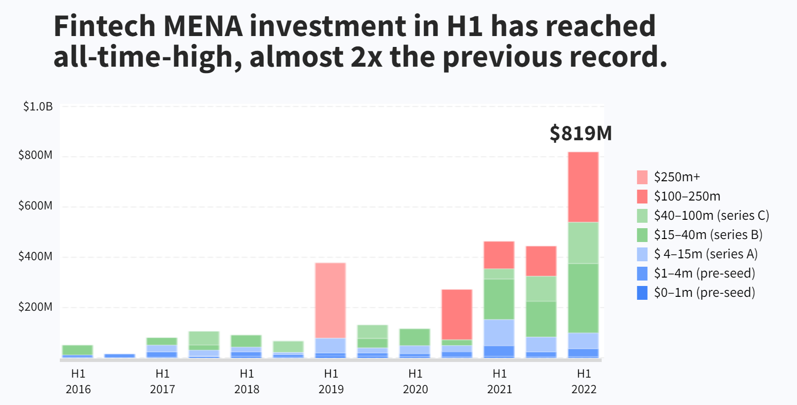

How top banks use transaction data enrichment to improve customer experience in digital banking
Retail banking has been a rapidly evolving industry over the past few years. Existing traditional banks are now struggling to compete with the innovation from fintech startups and newcomer tech giants entering the market.
Published on
Retail banking has been a rapidly evolving industry over the past few years. Existing traditional banks are now struggling to compete with the innovation from fintech startups and newcomer tech giants entering the market.
The once seemingly impenetrable fortress of the big banks where customers felt an almost subservient obligation to remain loyal has been breached by this new wave of technology-driven competition.
Today's digital banking customers are more tech-savvy than ever and expect their banks to offer a seamless, simple, and transparent experience.
- In 2022, nearly 80% of millennials reported using digital banking services
- 89% of GCC banking customers will opt for digital banking services over visiting a physical branch
- 66% of MENA transactions are expected to be cashless by 2023
- 31% feel existing digital banking solutions are weak In UAE & KSA
- $153 Bn Value of Digital transactions
- 20% growth in digital transactions
- $258 Bn value of customer credit
They want to take their banking operations into their own hands, be more responsible for their financial well-being, get personalized insights, and know what’s happening with their money, without standing in a queue for the teller, filling out tons of paperwork, or struggling with the IVR robot on the phone.
Banks will need to offer a digital experience that is more than just the traditional banking experience; They can do this by plugging into transaction data enrichment services.
What is transaction data enrichment in digital banking?
When a customer logs into their online bank account, they're not just looking for their current balance; They want to see where their money is going and how to use the services that are most important to them. They also want this experience to be simple and transparent, all in real-time.
Transaction data enrichment is the practice of including useful bytes of information alongside the user's transaction records, so customers can get more context on their finances. Banks don't always do a great job with this as they struggle with balancing customer finances and simplicity.
How can it be beneficial for banks you might ask?
Enriching data can tell financial institutions what their customers like, which products and services they purchase most often, and what their favorite brands are - allowing them to make the best decisions about how to serve those customers
This in turn can help financial institutions deliver a better customer experience, leading customers to purchase more products and services - ultimately enriching banks' bottom line.
The pain point for most banks in the region
Banks have a problem - transactions are complicated. Each customer transaction involves a point of sales terminal, a merchant, a trade license, a payment processor gateway, an acquiring bank, and so on. Raw descriptions for transactional data is usually messy and not easy to read or understand.
From a customer's perspective, it can be frustrating to have to track their spending and know where they're spending money.
For example, Most account statements do not offer a visual representation of the customer's transactions; rather, it's a complicated excel-sheet that looks like a foreign language.
When you look at a bank statement, it should be simple - the transactions should be clearly laid out, easy to read, and meaningful using beautiful graphics.
In consequence, banks have to bear the burden of chargeback and other operational fees.
Key stats and opportunities for financial institutions in MENA
There's a great opportunity for financial institutions to take advantage of the rapid growth in Middle Eastern and North African countries. Here are some statistics:

How leading banks use transaction data enrichment to deliver an unmatched user experience
To create a more rewarding user experience in digital banking, leading banks are utilizing enrichment data solutions that can automatically collect and arrange data for easy consumption by their users. Here are some of the advantages they offer to their customers:
- Clean brand names, logos, amount, name, and categories.
- Have a complete view of the customer's spending behavior.
- Replacing manual processing with automation and much more.
What are the benefits of transaction enrichment for merchants?
- Reduces chargebacks : End users are able to clearly understand where their money is going. Merchants receive a lot of chargeback requests when customers look at their bank statements and see unfamiliar merchant names.
- Decreases operating costs : Clearly understand customer spending habits and target them with relevant products across different departments and reduce the cost of acquisition.
- Improves the customer experience and the journey funnel : Easily delivers clear, understandable transaction and spending activity so customers can plan and budget their spending.
- Simplifies account statements : Provide users with properly formatted and structured transactional data, with clarity on the brand name, logo, and category.
- Identifies unknown merchants : Many merchants that belong to big group names are not easily recognizable, which can lead to a large number of chargebacks.
- Automates reporting :Get deeper insights into your customer's spending habits such as their main spending categories, top brands within each category, and the trends for these spending patterns.
- Provides built-in analytics : Analytic tool that provides in-depth insights into shopping history data, providing businesses with vital information to gain a deeper understanding of how customers spend their money.
- Retargets & personalizes recommendations : Easily cohort and identify customers based on their interests and push relevant products to them based on data which increases conversion rate and reduces acquisition costs
How to get started and get the most out of transaction data enrichment in digital banking?
Too often, banks and other financial institutions jump into a relationship with payment data solution providers without considering their business needs or the vendor’s capabilities.
When deciding on a payment data enrichment provider, it’s important to consider the following factors:
- Make sure you know what kind of data you need. Do you need to enrich detail on account transactions or are you looking to unlock new business insights? Pose these questions as they will help you determine which is the right choice for your business
- Start using Lune’s sandbox where you can test data enrichment right away from Lune’s website
- Get into the technical stuff, share the documentation with your team and let them have a quick understanding of how it works
- Meanwhile, get in touch with our team and allow us to support you with your data enrichment
Conclusion
To sum it up, transaction data enrichment fills in the blanks left by your core system, allowing you to provide a better experience for your customers. It is only one part of an effective omnichannel experience strategy, but it's certainly an important one. If you're looking to provide a truly convenient, effortless experience for your customers, you can't afford to overlook it.
Reach out to us if you're interested in accelerating your digital banking strategy and learning more about how we help customers with similar use cases.